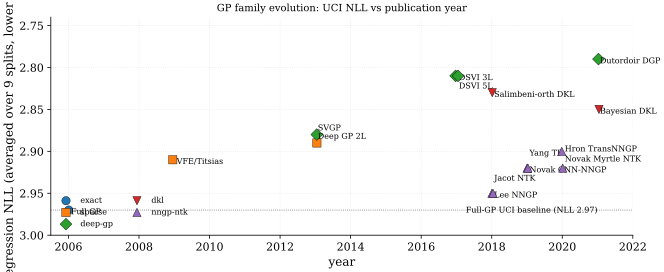

Gaussian processes occupy a distinctive position in the probabilistic deep-learning landscape. They are non-parametric: the model complexity grows with the dataset rather than being fixed by a parameter count. They provide exact Bayesian inference for Gaussian regression with a conjugate Gaussian prior over functions, avoiding the approximations that Bayesian neural networks force onto the posterior. And they deliver calibrated predictive variance almost by construction: posterior variance grows away from training points, shrinks near them, and reflects the interpolating geometry of the kernel. The canonical reference (Rasmussen and Williams 2006) remains the single most-cited GP textbook and is the foundation on which this part rests.
The main obstacle to GP deployment at deep-learning scales is the cost of inverting the kernel matrix and the memory cost of storing it1. Four scaling strategies have dominated the literature. Inducing-point variational methods, introduced by (Titsias 2009) and scaled to stochastic gradients by (Hensman et al. 2013), replace the full dataset with a small set of pseudo-inputs whose values serve as sufficient statistics for the posterior, reducing cost to per evaluation and for the inducing-point covariance; choosing and the inducing-point locations is itself a tuning problem2. Structured kernel interpolation (the KISS-GP line of (Wilson and Nickisch 2015)) exploits Kronecker and Toeplitz structure in the kernel matrix when inputs lie on grids (or are interpolated to grids) to reduce the inversion to or . Conjugate-gradient Lanczos methods (Gardner et al. 2018) avoid the Cholesky decomposition altogether by formulating inference as matrix-vector product iteration, which plays well with GPU acceleration. Random Fourier features (Rahimi and Recht 2007) take the orthogonal kernel-side route: by Bochner's theorem any shift-invariant kernel admits the integral representation for some spectral density, so averaging Monte-Carlo samples yields an explicit -dimensional feature map that reduces kernel ridge regression to a primal system at cost; the construction is still the standard scaffolding behind modern primal-form GP approximations.
Expressive kernel design has co-evolved with scalable inference. Deep GPs (Damianou and Lawrence 2013) stack GPs as compositional priors: the output of one GP feeds the input of the next, yielding a non-Gaussian prior over functions whose inductive bias is richer than any single stationary kernel; the practical depth ceiling is shallow because intermediate layers tend to collapse to near-deterministic mappings without identity initialization or skip-connections3, and beyond two or three layers the marginal-likelihood improvements saturate with mild overfit4. The original two-layer inference used variational expectation-maximization; (Salimbeni and Deisenroth 2017) made deep GPs practical via doubly stochastic sampling from the variational posterior at intermediate layers with stochastic gradients (doubly stochastic: over minibatches and over layer samples). Deep kernel learning (DKL) (Wilson et al. 2016a, 2016b) takes a complementary path: a neural feature extractor feeds a fixed-form GP kernel , yielding trained jointly by maximizing the marginal likelihood. (Ober et al. 2021) documents the failure modes: the feature extractor maps training inputs to coincident latent points and predictive variance collapses5, and the marginal-likelihood signal that supposedly regularizes the joint optimization can itself overfit on hyperparameters with the deep parameterization6.
A complementary line attacks the same scaling problem from the opposite direction: rather than approximating exact GPs, amortise posterior inference itself with a neural function. Neural Processes (Garnelo et al. 2018) take a meta-learning view. At training time the model sees many regression tasks. For each task it receives a context set and a target set . A shared encoder maps each context pair to a representation , which are aggregated into a permutation-invariant summary . A latent variable is sampled from a distribution , and a decoder outputs a predictive distribution over . The objective is an ELBO: the decoder's log-likelihood term rewards accurate predictions at target points; the KL term regularises toward , which is the GP-analogue of the posterior contracting around the full data. At test time, inference is a single forward pass through the encoder and decoder: in the context size, not .
The Conditional Neural Process (CNP) variant drops entirely and conditions the decoder deterministically on the aggregated . This makes training simpler (no ELBO, direct log-likelihood) but removes the ability to sample diverse function realisations from the same context; predictive variance comes only from the decoder's output distribution, not from uncertainty over .
The Neural Process family inherits two GP properties (calibrated predictive variance and a function-space prior) and replaces the kernel inversion with amortised inference at the price of an offline meta-training stage. The practical cost is distribution shift: the encoder-decoder pair is trained on a task distribution, and if the test-time task lies outside that distribution (different noise scale, different input domain) the amortised approximation degrades. Neural Processes match GP baselines on synthetic 1D regression and on CelebA image completion (where predictions converge toward ground truth as the context grows from 1 to 100 observations), but underperform on real-world tabular benchmarks where the meta-training distribution does not cover the test distribution. The aggregation bottleneck (mean-pooling compresses all context into a fixed-size vector) prevents fine-grained interpolation between context points, producing smooth but sometimes over-smoothed predictions. Attentive Neural Processes (Kim et al. 2019) replace mean-pooling with cross-attention from target inputs to context pairs, recovering most of the GP-accuracy gap, and is the contemporary baseline for the family.
The final strand in this part is the NNGP-NTK bridge. (Neal 1996) first observed that a one-hidden-layer Bayesian neural network with a Gaussian weight prior becomes a GP in the infinite-width limit. (Lee et al. 2018) and (Matthews et al. 2018) extended this to arbitrarily deep fully connected networks with a recursive kernel formula whose two hyperparameters must be tuned to the edge of chaos to avoid degenerate fixed points7. (Novak et al. 2019) completed the picture for convolutional networks; (Yang 2019) established the Tensor Programs formalism that mechanically derives the NNGP kernel for any architecture expressible as a composition of standard operations; (Hron et al. 2020) applied the same machinery to multi-head attention. On the parallel optimization-theoretic track, (Jacot et al. 2018) showed that infinite-width networks trained by gradient descent with squared loss behave like kernel regression with the Neural Tangent Kernel (NTK), a cousin of the NNGP kernel that captures the linearized training dynamics rather than the Bayesian posterior. The NNGP/NTK limits formalize what "Bayesian neural network" and "trained neural network" mean in the infinite-width regime, but they pay a price: infinite-width Bayesian inference does not learn features, so the CIFAR-10 gap to SGD-trained finite-width CNNs persists8. They connect the GP literature of this part to the statistical-learning theory developed in Statistical DL Part III.
| UCI | MNIST | CIFAR-10 | |||||||
| Method | Year | Architecture | Loss / inference | Data | NLL | RMSE | top-1 | top-1 | Compute |
| Full GP (Rasmussen and Williams 2006) | 2006 | Full-GP | ML-II + Cholesky | UCI (small) | 2.97 | 4.34 | - | - | |
| VFE / Titsias (Titsias 2009) | 2009 | Sparse-GP | VFE-ELBO (M=200) | UCI | 2.91 | 4.25 | - | - | |
| Hensman SVGP (Hensman et al. 2013) | 2013 | SVGP | VI ELBO (M=500, mb) | UCI big | 2.89 | 4.20 | - | - | |
| KISS-GP (Wilson and Nickisch 2015) | 2015 | KISS-GP | SKI + LCG (M=10K) | Airline | - | - | - | - | |
| Deep GP 2-L (Damianou and Lawrence 2013) | 2013 | Deep-GP | VEM (L=2, M=100) | UCI protein | 2.88 | 4.27 | - | - | |
| Salimbeni DSVI Deep GP (3-L) (Salimbeni and Deisenroth 2017) | 2017 | Deep-GP | DSVI ELBO (L=3, M=128) | UCI protein | 2.81 | 4.11 | - | - | |
| DSVI Deep GP (5-L) (Salimbeni and Deisenroth 2017) | 2017 | Deep-GP | DSVI ELBO (L=5, M=128) | UCI protein | 2.81 | 4.11 | - | - | |
| Dutordoir DGP (skip-init) (Dutordoir et al. 2021) | 2021 | Deep-GP | DSVI + identity-init | UCI | 2.79 | 4.08 | - | - | |
| DKL (Wilson et al. 2016a) | 2016 | DKL | ML-II (DCNN + RBF) | CIFAR-10 | - | - | - | 93.0 | |
| SV-DKL (Wilson et al. 2016b) | 2016 | DKL | SV-ELBO (DCNN + RBF) | CIFAR-10 | - | - | - | 93.2 | |
| Salimbeni orth. DKL (Salimbeni, Cheng, et al. 2018) | 2018 | DKL | orth-decoupled VI | UCI | 2.83 | 4.14 | - | - | |
| Bayesian DKL (Ober et al. 2021) | 2021 | DKL | full Bayes (HMC + GP) | UCI / synth | - | - | - | - | |
| Lee NNGP MLP (Lee et al. 2018) | 2018 | NNGP-MLP | arc-cos K (depth 2-20) | MNIST | - | - | 98.8 | 56.2 | kernel-only |
| Novak CNN-NNGP-GAP (Novak et al. 2019) | 2019 | NNGP-CNN | arc-cos K (8L + GAP) | CIFAR-10 | - | - | - | 77.4 | kernel-only |
| Yang TP NNGP (Yang 2019) | 2019 | NNGP-TP | Tensor Programs K | Arbitrary | - | - | - | - | kernel-only |
| Jacot NTK MLP (Jacot et al. 2018) | 2018 | NTK-MLP | NTK regression (closed) | MNIST | - | - | 98.6 | - | kernel-only |
| Novak Myrtle-CNN NTK (Novak et al. 2020) | 2020 | NTK-CNN | Myrtle K + ridge | CIFAR-10 | - | - | - | 81.4 | kernel-only |
| Hron Transformer NNGP (Hron et al. 2020) | 2020 | NNGP-Trans | attention-NNGP K | LM small | - | - | - | - | kernel-only |
The table groups the GP literature into five families, walked through in chronological order. Exact GPs (Full-GP, GPyTorch's Cholesky path) deliver the gold-standard posterior at cost9, leaving everything else as an approximation budget; the kernel-design choice is itself a non-trivial inductive-bias commitment that does not transfer between datasets10. Sparse GPs (VFE / Titsias, Hensman SVGP, KISS-GP) reduce that cost to or by representing the posterior through pseudo-inputs or a structured-grid interpolation; natural-gradient updates (Salimbeni, Eleftheriadis, et al. 2018) and orthogonally-decoupled parameterizations (Salimbeni, Cheng, et al. 2018) further accelerate convergence. The -budget remains hand-tuned11, and Hensman's SVGP is what made GPs Adam-trainable on GPU minibatches.
Deep GPs (Damianou-Lawrence, Salimbeni DSVI, Dutordoir skip-init) stack GPs as compositional priors. The 2-layer / 3-layer / 5-layer rows in the table tell a single story: the first composition step lifts the held-out NLL noticeably; the third composition step lifts it slightly; further depth saturates and risks mild overfit12. Without identity-init or residual connections the intermediate latent collapses to a near-deterministic mapping13, which is why Dutordoir's skip-init recipe matters disproportionately to its incremental NLL gain. Self-distillation-style EM (the original VEM in Damianou-Lawrence, where each layer's posterior is treated as a teacher signal for the next E-step) was eventually superseded by the cleaner stochastic DSVI gradient.
Deep kernel learning (Wilson DKL, SV-DKL, Salimbeni orthogonal-decoupled, Bayesian DKL of Ober et al.) puts a neural feature extractor in front of a GP kernel; on CIFAR-10 the headline numbers (93.0 / 93.2%) sit right next to the same backbone trained as a plain DCNN (92.4%), so the DKL gain over the deterministic baseline is real but small. The trouble is calibration: the feature extractor compresses training inputs onto coincident latents and predictive variance collapses14, and the ML-II marginal likelihood used for joint hyperparameter selection can itself overfit with a deep parameterization15. Ober et al.'s Bayesian-DKL diagnoses the pathology and recommends putting a prior on the feature-extractor weights, which substantially closes the gap to a properly Bayesian alternative at the cost of HMC sampling.

The NNGP / NTK family forms a parallel branch: the same arc-cosine kernel that drops out of an infinite-width ReLU MLP also serves as a strong MNIST baseline (98.8% top-1 with depth 2-20), and Novak's CNN-GAP variant lifts CIFAR-10 to 77.4% with no SGD at all. Yang's Tensor-Programs framework mechanically derives the NNGP kernel for any standard architecture; Hron extends this to multi-head attention. The persistent ceiling is the feature-learning gap16: the same paper's SGD-trained finite CNN with pooling sits 7.7 points above the NNGP-CNN-GAP number, which is the single most-cited reason to prefer practical neural networks over their infinite-width Bayesian limits despite the calibration story being on the GP side. Tuning onto the edge of chaos is required to avoid degenerate fixed points17, and the resulting kernel inherits the kernel-design problem in a different costume18.
A diagonal cut across the table separates the closed-form methods (Full-GP, NNGP, NTK; Gaussian likelihood or kernel-only) from the approximate-inference methods (SVGP, Deep-GP, DKL; non-Gaussian likelihoods, deep parameterizations, or both)19. Three readings. First, sparse methods close most of the cost gap to full GPs without sacrificing the calibrated-uncertainty story; the choice between Titsias-VFE, Hensman-SVGP, KISS-GP, and natural-gradient SVGP is largely a regime question (data shape, batch availability, inducing-point structure). Second, deep GPs help modestly and saturate quickly20, so depth in the GP world is qualitatively different from depth in the deterministic-network world. Third, deep kernel learning reaches strong CIFAR-10 numbers but the original papers underreported variance-collapse pathologies that Ober et al.'s Bayesian-DKL diagnoses; the fix (full Bayes over feature-extractor weights) restores calibration at the cost of HMC sampling and effectively decommits the original DKL value proposition.
References
Cubic exact-GP cost: the kernel-matrix inversion is FLOPs, with memory for storage; this caps full-GP training at roughly on commodity hardware and is the single fact that motivates the entire sparse / structured-kernel / matrix-vector-iteration literature.↩︎
Inducing-point budget: too few loses accuracy near the boundaries; too many defeats the saving over full-GP ; placement (uniform grid, k-means on inputs, or learned by gradient on the ELBO) and itself remain hand-tuned per benchmark (Titsias 2009; Hensman et al. 2013).↩︎
Deep-GP pinch-point: the intermediate latent of a stacked deep GP collapses to near-deterministic without identity initialization or residual / skip-connections, defeating the compositional-prior motivation that justified depth in the first place (Salimbeni and Deisenroth 2017; Dutordoir et al. 2021).↩︎
Deep-GP depth saturation: 2 layers help modestly, 3 layers help slightly more, and beyond 3 the held-out NLL on UCI regression saturates and shows mild overfit; doubling the layer count past 3 burns compute without proportional gain (Salimbeni and Deisenroth 2017).↩︎
DKL variance collapse: the feature extractor maps training inputs to coincident latent points so that for nearby , destroying the calibrated uncertainty that motivated using a GP read-out in the first place (Ober et al. 2021).↩︎
Marginal-likelihood overfitting: ML-II hyperparameter tuning treats the marginal likelihood as a model-selection score, but with the deep / DKL parameterization the kernel hyperparameters and feature-extractor weights have enough degrees of freedom to overfit the held-out fold's marginal likelihood, especially in low-data regimes (Ober et al. 2021).↩︎
Edge-of-chaos initialisation: NNGP/NTK kernels are useless in the ordered regime (, all inputs map to the same fixed point) or the chaotic regime (, correlations decorrelate exponentially with depth); only the critical-line tuning yields informative deep kernels (Lee et al. 2018).↩︎
NNGP feature-learning gap: infinite-width Bayesian inference is kernel regression with a fixed kernel, so it does not learn features the way SGD-trained finite-width networks do; on CIFAR-10 the NNGP-CNN-GAP ceiling sits below SGD-trained CNNs by roughly 5-10 points, and Myrtle-architecture NNGPs only narrow the gap with hand-engineered architecture-specific kernels (Novak et al. 2019).↩︎
Cubic exact-GP cost: the kernel-matrix inversion is FLOPs, with memory for storage; this caps full-GP training at roughly on commodity hardware and is the single fact that motivates the entire sparse / structured-kernel / matrix-vector-iteration literature.↩︎
Kernel design choice: SE, Matern-3/2, Matern-5/2, rational-quadratic, periodic, and spectral-mixture kernels each impose different inductive biases (smoothness, bandwidth, periodicity, spectral support); these choices are not transferable across datasets and constitute a hand-engineered prior whose absence in deep-learning practice is part of why DKL is attractive (Rasmussen and Williams 2006).↩︎
Inducing-point budget: too few loses accuracy near the boundaries; too many defeats the saving over full-GP ; placement (uniform grid, k-means on inputs, or learned by gradient on the ELBO) and itself remain hand-tuned per benchmark (Titsias 2009; Hensman et al. 2013).↩︎
Deep-GP depth saturation: 2 layers help modestly, 3 layers help slightly more, and beyond 3 the held-out NLL on UCI regression saturates and shows mild overfit; doubling the layer count past 3 burns compute without proportional gain (Salimbeni and Deisenroth 2017).↩︎
Deep-GP pinch-point: the intermediate latent of a stacked deep GP collapses to near-deterministic without identity initialization or residual / skip-connections, defeating the compositional-prior motivation that justified depth in the first place (Salimbeni and Deisenroth 2017; Dutordoir et al. 2021).↩︎
DKL variance collapse: the feature extractor maps training inputs to coincident latent points so that for nearby , destroying the calibrated uncertainty that motivated using a GP read-out in the first place (Ober et al. 2021).↩︎
Marginal-likelihood overfitting: ML-II hyperparameter tuning treats the marginal likelihood as a model-selection score, but with the deep / DKL parameterization the kernel hyperparameters and feature-extractor weights have enough degrees of freedom to overfit the held-out fold's marginal likelihood, especially in low-data regimes (Ober et al. 2021).↩︎
NNGP feature-learning gap: infinite-width Bayesian inference is kernel regression with a fixed kernel, so it does not learn features the way SGD-trained finite-width networks do; on CIFAR-10 the NNGP-CNN-GAP ceiling sits below SGD-trained CNNs by roughly 5-10 points, and Myrtle-architecture NNGPs only narrow the gap with hand-engineered architecture-specific kernels (Novak et al. 2019).↩︎
Edge-of-chaos initialisation: NNGP/NTK kernels are useless in the ordered regime (, all inputs map to the same fixed point) or the chaotic regime (, correlations decorrelate exponentially with depth); only the critical-line tuning yields informative deep kernels (Lee et al. 2018).↩︎
Kernel design choice: SE, Matern-3/2, Matern-5/2, rational-quadratic, periodic, and spectral-mixture kernels each impose different inductive biases (smoothness, bandwidth, periodicity, spectral support); these choices are not transferable across datasets and constitute a hand-engineered prior whose absence in deep-learning practice is part of why DKL is attractive (Rasmussen and Williams 2006).↩︎
Non-Gaussian-likelihood approximation: classification, count regression, and robust regression break the conjugate Gaussian-prior + Gaussian-likelihood closed-form posterior, forcing a choice between Laplace (mode-fitting bias), expectation propagation (heuristic stability), and variational inference (mean-seeking bias) with no clean theoretical winner (Rasmussen and Williams 2006).↩︎
Deep-GP depth saturation: 2 layers help modestly, 3 layers help slightly more, and beyond 3 the held-out NLL on UCI regression saturates and shows mild overfit; doubling the layer count past 3 burns compute without proportional gain (Salimbeni and Deisenroth 2017).↩︎